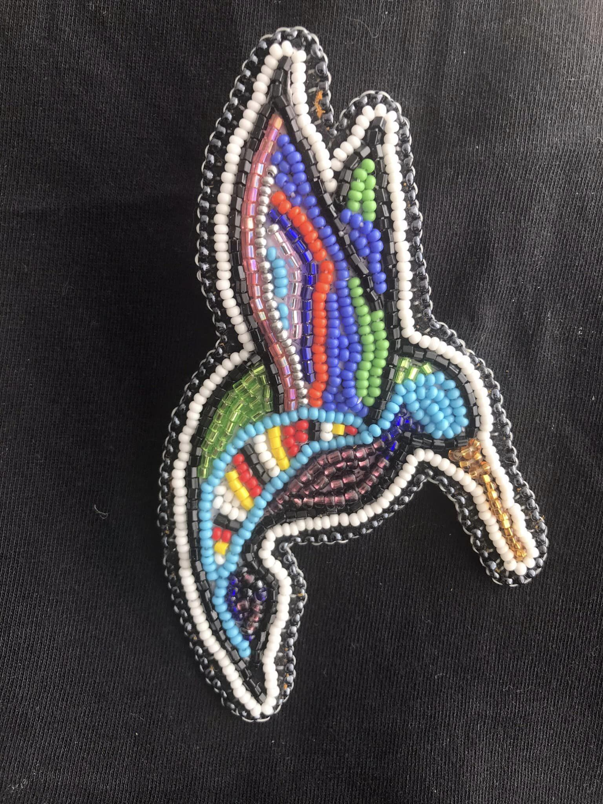
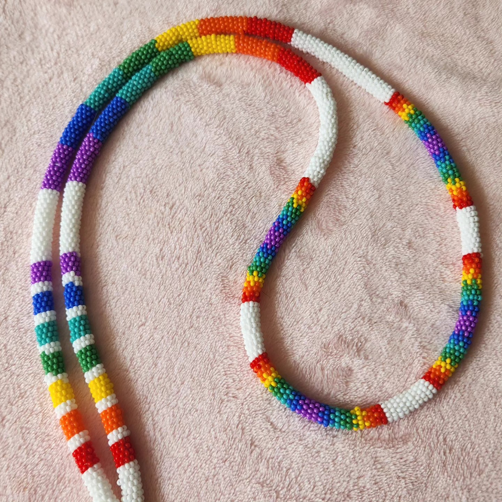

Tammy Rivers

Tammy is a multitalented artist who specializes in sewing and
beadworking. She makes phenomenally made and unique items such as
medicine gnomes, ribbon skirts, earrings and other accessories. She
brings years of experience, and an eye for colours that makes her
stand out from the crowd.
Michelle La Forme

Michelle is a multitalented artist who specializes in beadwork and
painting. As a beginner, she loves to try and make any and every
type of thing that comes to her mind. She never strays from a
challenge, and hopes to one day bead full time.
Natasha Holloran
Natasha is a multitalented artist who tries all different kinds of
crafting and art. She loves to try new things, and has been
crocheting for many years. She is also learning to do beadwork, and
loves to express herself creatively.